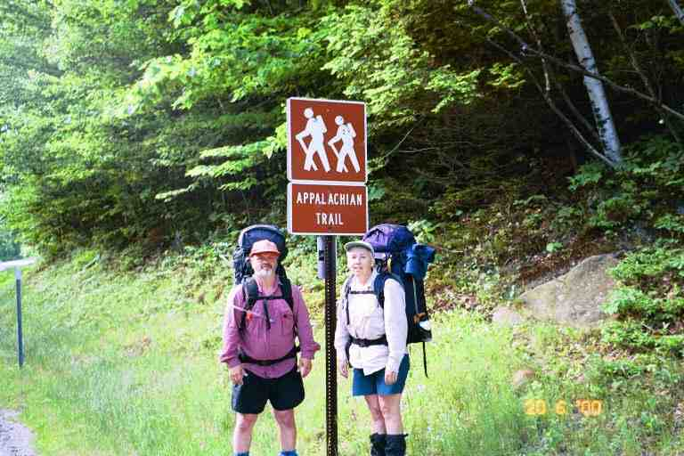
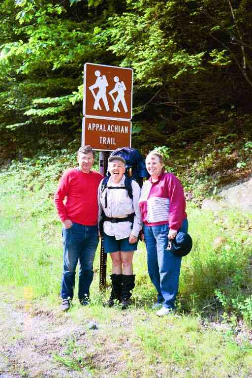
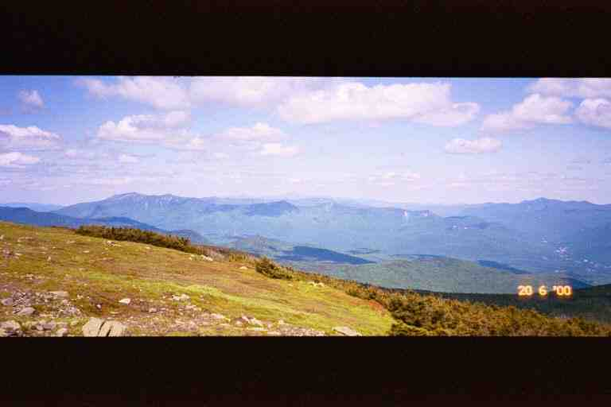
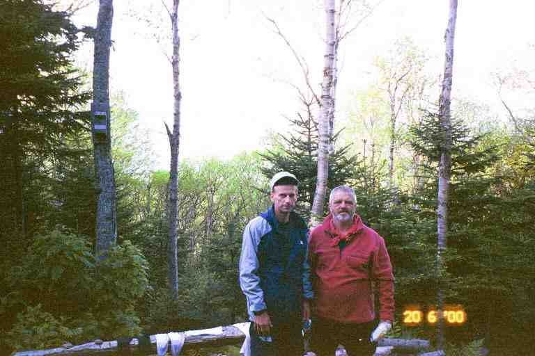
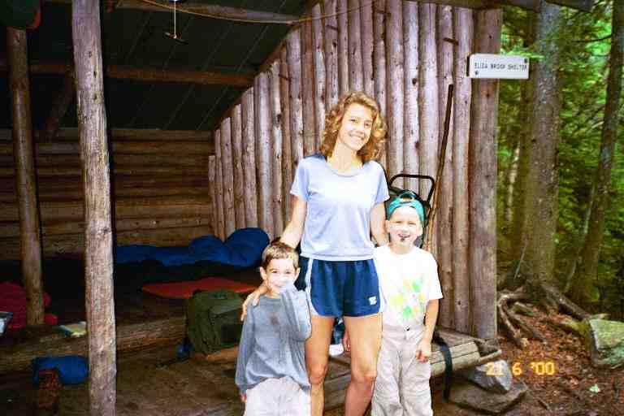
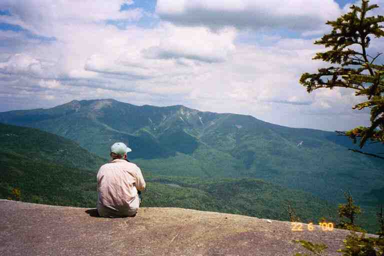

This is a paragraph.
The next few chapters cover MA and PA's return to the Appalachian Trail (AT) in 2000. The 2000 hike was not the same as the previous year because we were not surrounded by friends. This difference will likely affect the story as the previous chapters were often the story of us and our friends in the wilderness. However, like the previous chapters, it is the detailed story of our trip and will allow us to relive the adventure in future years. We will try to convey our love for the trail and trail life by describing the terrain, the hardships, the incidents and the people.
Yes, there were still many people stories to tell in 2000. We met a number of northbound (NOBO) thru hikers, but these were speedy hikers who had only taken about 4 months to get to the White Mountains, and we usually only saw them once. We also met many southbounders (SOBO's), but of course we were only crossing paths or spending one night together. And again, there is lots of trail magic to talk about.
Because I do not want to plagiarize, I will again copy and give credit for short passages from a few on-line journals. I suspect many will be from JILEBI's journal as her journal tends to be very descriptive. As these are 1999 journals, these excerpts will likely only be descriptions of terrain, vegetation, and physical features.
***************
Trail MagicThe 1999 hike started and ended with trail magic, and it turns out that the 2000 hike did also. We had to find a way to get to Glencliff NH (in the middle of nowhere) where we ended our previous year's hike. We received offers from two 1999 thru hikers. If we could get to Boston, STITCHES would get us to the trail, and SERPICO who lives about 35 miles from Glencliff would get us there if we could get a bus close to his place. We eventually settled on a third offer.
On June 19, 2000, we drove 10 hours with our friends Betty and Bill from the Outdoor Enthusiasts Club to the home of trail angel MOTHER HEN and her husband KEMO-SA-BE in Harbor Center NH. We spent the night at their home enjoying their wonderful hospitality, including a supper with a decadent dessert and a big breakfast. MOTHER HEN often brought thru hikers home for the night, and was used to serving meals to people with huge appetites. However our appetites had not developed yet. The next morning they drove us to the trail and we were on our way. Picture of MA and PA at trail head and a picture of MA with our trail angels.


************
At 9 a.m. on the morning of June 20, we left MOTHER HEN and KEMO-SA-BE at the side of NH 25, crossed the road and descended to a brook just below the road. We did not have our hiking legs so it took a few minutes to examine and traverse this shallow 10 foot wide brook. I chose the wrong spot and water got in my boots. We immediately climbed the first 250 feet up Mt. Moosilauke, and then the trail levelled off and brought us to Jeffers Brook shelter at the 1.1 mile mark. Despite the short distance, we needed a break so we stopped for a snack at this shelter situated among high white pines and hemlock. As we sat and relaxed on the edge of the shelter, reading the register, it felt that this stop had magically transported us from our other life back to the trail life. It was as if we had never left.
We went through a heavily wooded area and then followed a paved road for 0.4 miles up a steep hill before taking a wide trail that continued to climb in light woods and along the edge of a few fields. The AT then left the wide trail and went into the woods and began the serious climbing of Moosilauke. It took us 5.5 hours to do the 4.5 miles from the shelter to the 4800 foot summit of the mountain, a rise of 3500 feet. This mountain is the first one for NOBO's (North Bounders) that is above tree line. We were entering the Whites, so we were going to be climbing many such mountains in the next few weeks. JILEBI describes the climb very well:
*** "Then it was up Mt. Moosilauke. It was strange at first to keep going up with no end in sight. I felt quite strong and started to enjoy the rhythm of hiking uphill. The elevation gain could be noticed by the vegetation. The hardwoods giving way to firs and spruces as we climbed higher. Eventually the spruces dominated and then started getting shorter. As we crested the last flank of the mountain the trail flattened out and we felt as if we were walking within a Christmas tree farm. Today was our first day above the tree line. There were few tiny white alpine flowers intermixed with mosses and grasses at the summit. It was crystal clear and we could see forever. Some of the past clearcuts could be noticed as lighter green patches amidst the dark green on the surrounding mountain." ***
This was quite a climb for the first day back on the trail so MA and I took a few breaks on the way up. The trail was steep in many places with soft, muddy ground in the lower level woods and more rocky, desolate areas as we got higher. I describe it in my notes as walking up uneven stairs for 3800 feet (elevation). We stopped for a break where the trail levelled off on a large plateau about 200 feet below the summit. We could see the steep rocky exposed ascent on our right as we sat on piles of flat rocks amongst mosses and low vegetation and talked with a south bound section hiker named Walt who had limped up to us. We had a little disagreement about clothing for backpacking. He had noticed the fleeces we were wearing, because of the cool wind on the exposed mountain, and said they were too heavy to carry, and were useless when wet. We had new light fleeces and knew for a fact that fleeces were quick drying, but to each his own. We were joined by Mike a local hiker who was going our way. He said that the Whites could be very dangerous, with cold storms blowing in even in July and August and that a person would be foolhardy to hike these mountains without appropriate clothing.
We finally made it to the summit and stopped to talk with a number of day hikers who had conquered this mountain and were lazing around taking in the breathless 360 degree view. To the west, we could see Mounts Smart and Cube which we had crossed in the last days of the 1999 hike. One of the day hikers (MA had the feeling that he was Bill Bryson - who knows) was familiar with the view and pointed out the White Mountains to the north-east, our home for the next few weeks. Running left to right in front of us were a number of ranges and ridgelines including the Kinsmans, Franconia Ridge and the Presidential Range (see the attached picture). Way off in the distance was Mount Washington which we would not reach for 11 days but which we could identify even at this distance by the little puff of black smoke near the top, coming from one of the steam engines of the cog railway which climbs the mountain.

The route to Mount Washington, and through the rest of the Whites beyond it, was far from being a straight line. The trail climbed each of the high mountain ranges, and followed the ridgeline along the top, making long loops as it contoured around valleys and smaller mountains. Between each of the ranges was always a steep drop into one of the notches. The mountains were spectacular but this is difficult hiking territory with alpine climate on many peaks and dangerous sudden changes in the weather, as we would find out.
We dropped 500 feet down from the summit and climbed a small adjacent summit called Mount Blue, and then went down 750 feet over a 1 mile distance, the final portion of which was a steep narrow rocky descent, where we found ourselves hanging on to trees to keep our balance. Part way down, we came to the short side trail to Beaver Brook shelter. It was 4:30 and we had done 7.9 tough but spectacular miles.
The shelter is located on a rocky wooded level area on Moosilauke's otherwise steep north face. The front of the shelter gave us a view over the trees to Franconia Ridge. READING MAN, a section hiker from Pennsylvania who has been doing the trail over the last few years, was already at the shelter. MA took a picture of him and I with the mountains to our back, and he had MA take the same picture with his camera. (In late August we were surprised to get a copy of the picture in the mail from him. He had located our names and address in the hiker directory at www.trailjournals.com. We e-mailed our picture to him.)

A young day hiker that we had met on the summit stopped by on his way down the mountain. He worked at the snack bar at Lost River Gorge located 0.5 miles to the east of the trail at the base of the mountain. He said we should go have breakfast at the snack bar the next morning. It was only 1.6 miles down the mountain which he said should only take us 1 hour or so.
We were joined by three NOBO thru hikers. DUCK CROSSING was in his late twenties and was accompanied by two brothers, SKYWALKER (in his early twenties) and RAT FUNK (about 17). They cooked their meals and shared some trail stories with us. SKYWALKER told the story of how RAT FUNK got his name. It seems that in Pennsylvania his backpack developed an odour that he could not get rid of. After a couple of weeks, it became unbearable and he took his pack apart at the pavilion in Port Clinton. He discovered a flattened dried-out mouse in the bottom which he flung out of the bag in disgust and watched it skip Frisbee like across the floor of the pavilion.
The two brothers showed us their backpacking hammocks which they had strung up in the nearby trees. The ends of the hammocks were tied to trees as was a cord on each side to keep it wide and minimize the sag. They had hiked the entire trail with these hammocks. They allowed them to sleep in any terrain, as long as there were trees. They were enclosed hammocks with mesh tops and a separate fly which could be attached to the top of the hammock or strung up a little above to allow air circulation. Entry was from underneath through a slit in the bottom. Once inside, the person's weight caused the slit to close. Sleeping pads and sleeping bags could be used inside. We were very impressed.
We had breakfast before leaving the next morning, as we figured it would take us longer than the one hour that the young hiker had estimated. We were right. It took us from 7:40 to 10:30 to do the 1.6 miles down to NH 112 at Kinsman Notch. It was a steep 3800 foot descent that others have described as follows.
SINGLEMALT: ( ) *** "...down the north slope of Moosilauke, and what a descent it was. There are areas of steeply sloped rock, which have had wedge-sectioned pieces of railroad ties anchored to the rock as steps, and pieces of concrete reinforcing rod as hand rails. The trail followed a stream, which cascaded down the steep slope....." ***
JILEBI: ( ) *** " The descent seemed interminable and was very very steep. The last mile down the trail was bordered by Beaver Brook as it cascaded straight down Moosilauke. Kudos to the trail builders here who had strategically bolted wedges of wood on the sheer rock slopes. Without them I would be still up on the mountain." ***
We now knew why STITCHES had slacked packed this section in the other direction. It would definitely be easier to go up these steeply sloped rocks. Our heavy packs kept us off balance and made the descent dangerous. The "steps" were helpful but were often far apart and we often had to slide down from one to another, either on our stomach or bum, depending on the situation. Every once in a while, we would come to a ledge or other level area where we would stop and admire the brook cascading noisily down the rocks. The three thru hikers passed us and were gone. We met an elderly gentleman dayhiking up the mountain, who talked to us ecstatically about the beauty of this section of trail.
At Kinsman Notch, the two brothers were preparing to walk down the road to the snack bar for breakfast. We decided to keep on going as our pace was slow and we had some distance to our destination. On the other side of the road, we met a SOBO called RED DOG trying to catch a ride to North Woodstock to check up on the weather, as it seemed threatening. We then met a young SOBO couple (PETER PAN and TINKERBELL) as we climbed the tough but short 800 foot incline up from the road. There were then a great many ups and downs as the trail slowly made its way up Mount Wolf. There were no steep climbs but once in a while we had to climb up or down a number of large boulders, which sometimes required MA to get on her hands and knees. We were constantly going over rocks and roots and had to go through a number of boggy areas. We stopped and talked with a middle aged couple from PA, originally from Nova Scotia, who were day hiking in the other direction.
The terrain prevented us from accumulating big mileage but after 3 hours we felt that we had covered the 4.5 miles from the road to the east peak of Mount Wolf and would be starting the descent to the shelter. But we soon realized we were wrong as the trail continued to climb. It was another 2 hours before we finally got to the top of the mountain. It rained on and off and fog rolled in. We were getting exhausted and were a little anxious and worried. It took us another 2.5 hours to do the 2 miles down the steep mountain and the further 1 mile to Eliza Brook shelter, where we arrived at 6 p.m. after a 8.9 mile day.
A young single mother ((ZELDA) was at this shelter with her two sons, aged 5 (FOREST) and 7 (DONALI). I have attached a picture of them. We found it absolutely amazing that she had climbed all the way here with them. She looked extremely fit and would have to be. She said she carried most of the heavy stuff so her pack weighed 68 pounds. The oldest boy carried 11 pounds and the youngest carried 7 but she carried all the stuff when they got tired. One thing she did to help keep the weight down was to carry only two sleeping bags, which she zipped together. ZELDA was a very organized expert backpacker who did not seem intimidated by the enormity of her undertaking. The boys were excitable but generally well behaved and each had his camp duties to perform.

We changed out of our damp clothes behind the shelter. I put on my thin long johns, my rain pants, and fleece jacket. It was a little chilly and it was nice to have something dry next to my body. I fetched water from the stream running below the shelter and then played Yahtzee with the two boys while we were doing our chores.
The other hiker here was a SOBO named OPTIMUS PRIME (a Transformer character I believe) who spoke a little about his trip so far. He told us he had come across SINGLETRACK up on Mount Washington, and they had got a ride together off the mountain because of the weather.
The register here had been started late in 1999 and I found entries by some people we knew. The most amazing were in November by two who were here completing sections they had not done on their trek north (FENRIR and someone whose name escapes me). I cannot imagine coming here in winter although I know STITCHES hikes the Whites year round, and many hike here with crampons on their boots.
The next morning ZELDA shared some of her breakfast with us. She made elaborate meals and was trying to have the boys eat as much as possible so as to reduce her pack weight. We had a lot of respect for her abilities and the way she raised her boys and involved them in her lifestyle. She said she was heading for Liberty Springs campsite that night which was a further 10 miles over both Kinsmans and then up Liberty Mountain. The next two days we worried about her as we hiked this difficult terrain, but it turns out they hiked off this mountain and drove to Franconia Notch from where they hiked up to Liberty Springs. That was still an enormous undertaking.
After packing and saying our goodbyes just after 8 a.m., we crossed Eliza Brook and followed it uphill for some distance before crossing it again and then beginning a very difficult climb. We virtually went straight up a very narrow rocky ravine. It gave the impression of being carved out over a number of years by violent spring run-offs. We climbed for hours going from boulder to boulder, sometimes crawling , and often pulling ourselves up using trees and roots. There were very few blazes and we often wondered if we were still on the trail, but it was unlikely we would have strayed as there was nowhere else to go in this dark mossy area. We never seemed to reach the top although the area did open up a little as time went by. Near the top, we met two older ladies day hiking in the other direction, followed by a male companion, who said he had a heart attack three years before and had always dreamed of coming here.
We finally summitted the South Peak of Kinsman just after noon, stopping on an area of large exposed flat rocks giving us a great view of the territory to the south. Behind us to the north we could see the little dip and the sharp climb that we would have to do up Kinsman North. It had taken us about 4 hours to do the 2 miles (2000 feet elevation) from the shelter and we were exhausted. We had a lunch of bagels and peanut butter and then lay on the rocks in the sun. We were tempted to get a little sleep, but we soon saw ominous clouds coming at us and decided not to stay around too long. In the Whites one always has to be aware of the weather.
This was our third day on the trail, and it was becoming apparent that we would not be able to come anywhere near meeting the rough schedule we had set for ourselves. The Whites are just too tough a place to start a hike. Thru hikers with a few months under their belts would have a lot less trouble in this territory. On the other hand, here are two quotes about the mountain we just climbed:
SINGLEMALT *** "This was the toughest climb I think I have made on the trail. It was long and steep; often hand over hand through the rocky sections. It took 4 hours to summit, and we were rewarded with a spectacular view." ***
JILEBI: *** "The steep path wound beside the beautifully noisy Eliza Brook and then went straight up. Everytime I crested what seemed like the peak we'd see another. It was then that we realized our old mileage estimation needed to be pegged down. " ***
We hiked from the South Peak to the North Peak where we stopped for a break and took in the view to the north. The attached picture shows MA looking over to Franconia Ridge. The next afternoon we would be climbing up Mount Liberty on the right side of the ridge and the following day we would walk along the ridge going over Little Haystack Mountain, Mount Lincoln and Mount Lafayette.

It took us two hours to do the 1.5 miles from the Kinsman South Peak, over the North Peak, and part way down to Kinsman Pond Campsite. On the way down we met a few SOBO's including SALAMANDER, DRIFTWOOD DOG and a young couple called UTAH SQUARED. It was only 2:30 when we arrived at the campsite and we had only done 4 miles, but we decided to call it a day. We had to take a short side trail from the AT to get to the campsite which is located in a boggy depression on the side of the mountain. Sections of this side trail were on bog bridges, and there were was a little trail leading to tent platforms. We decided to stay at the shelter.
We set up our stuff and went to the pond situated about 100 feet behind the shelter. We filtered water and soaked our feet but found the water a little too cold to swim. We sat on the rocks at the edge of the pond taking in the scenery. It was a small clear alpine pond with a rocky shoreline. A few hundred feet to our left, a man and a teenage girl were swimming. A mountain rose quickly on the other side of the pond from us, casting a reflection in the water. What a peaceful place.
A little later we made supper at the edge of the shelter, and were joined by the man and his daughter. They were out for a few days of backpacking and had set up their tent on one of the platforms. They carried dried fruit with them and shared some with us. The caretaker arrived and collected the $6 per person fee. This is one of a number of campsites in the Whites that are run by the Appalachian Mountain Club (AMC) and where there is a fee for staying. He talked about his successful thru hike a year or two before and told us about his job here in the Whites where he is caretaker at a couple of sites and does some trailrunning. He gave us some pointers about the AMC huts here in the Whites.
Like all the AMC campsites, this one had a dishwater disposal area consisting of a colander placed over a small hole. A sign instructed us to pour dirty dishwater through the colander and then remove the food bits and pack them out. We did not have to worry about food bits, because I always poured a little water in our pot after the meal and scraped and drank the contents before dishes were done.
There was rain and fog during the night and it was cool getting dressed and packed the next morning. I put on long johns and my fleece and we headed back to the AT at 7:45. When we got back to the cross road, we were unsure which direction to proceed. There were no white blazes and the signs did not clearly show the AT. We had heard and read that the trail through the whites was not always blazed adequately and that the signs often referred to the local name for the particular section of trail rather than the AT. One of the old weather worn signposts pointed down a trail called the Fishin Jimmy Trail, and a worn out symbol in the corner seemed to be that of the ATC. We recalled that KEMO-SA-BE told us to look for that symbol to identify the trail. We checked the map which confirmed that the AT followed the Fishin Jimmy Trail, and we were on our way.
A little rain was falling and the footing was wet and tricky as we descended the steep rocky trail down a ravine. There were many areas of flat sloped rocks and we often had to hang onto trees and or slide on our bums. It was slow progress but the exertion made us shed some of our clothes. The trail finally levelled off and went through a wooded area with rocks littering the trail. We met two SOBO's named KADELAKI and GARBAGE MAN and we stopped to talk with three Quebecois who had driven here for some day hiking on the Saint Jean Baptiste holiday weekend.
That morning we came to our first AMC hut, Lonesome Lake Hut. This hut was actually a number of buildings: a main building which included a dining room/kitchen, a few bunk houses and a toilet building. We climbed the dozen steps of the main building, entered the dining room/kitchen and sat on a bench at one of the long dining room tables. A number of young people were in the kitchen area preparing the evening's supper. They are the staff of the hut and are called the "croo".
There will be a lot more about huts later but I should mention that they accommodate between 36 and 90 people and that it costs $62 for dinner, breakfast and a bunk at the AMC huts. Thru hikers try to avoid staying at the huts because of the cost, but it is difficult to do because there are restrictions on camping in the Whites and the terrain makes it difficult to hike in one day from one non-paying site to another. There are a few other options available to thru hikers and I will explain them later.
Through the long row of windows, we got a view of the lake and the helicopter landing spot. Propane, canned goods and other large items are flown-in in the spring, and the rest of the food is carried in on the backs of the "croo" during the hiking season. I poured us glasses of lemonade (50 cents) from jugs on the counter, and one of the croo heated us some coffee on the stove. I grabbed pieces of poppy seed cake and some squares from the left-over bin. All left-over bread and baked goods (and sometimes pancakes) are placed in the container and sold at $1 for all you can eat. Before leaving, I asked for, and received, an entire loaf of bread that was left over from that morning's breakfast.
It was an easy 3 mile hike the rest of the way down to Franconia Notch, where the trail followed a stream under I 93. On the other side, we walked a short distance in the woods on a hiking/biking trail belonging to nearby Flume tourist area . We were soon off that trail and commenced climbing up Liberty Mountain to Franconia Ridge. The trail started gradually, rising 400 feet through woods, before levelling off and then going straight up what seemed to be one long rock fall stretching as far as one could see up the side of the mountain.
In fact, we would climb up these rocks all the way to our destination for the night, Liberty Spring Campsite, which was 2 miles away and 2000 feet above us near the top of the mountain. There were no boulders to crawl over, just large rocks to climb up. It was like climbing up a stairway with steps of different sizes. After some time we met a young dayhiking couple coming down from a round trip up the mountain. They estimated we had perhaps 30 minutes to the campsite. About 15 minutes later we met a father and son who told us we had at least 45 minutes to go. We regretted having asked in the first place. The climbing was very tiring and we eventually were stopping for breaks every 20 minutes.
After 3.5 hours of climbing, we finally came to the caretaker's tent to the left of the trail. The campsite was just a little further up the hill. When we reached the sign for the campsite, we could see a spring a short distance to the right of the AT, and a path to the left leading to the campsite. It consisted in at least a dozen wooden tent platforms along the length of this campsite path and a lower branch path. The edges of the campsite's paths were a line of small rocks that had been cleared away when creating the paths. There were little signs advising that we should not wander off the paths because we were just below an alpine climate area and the vegetation here was fragile. This seemed reasonable except that the privy here was a composting toilet with a sign requesting that everyone pee in the woods because liquids interfere with the composting. It seemed to us that it would be difficult to find an appropriate place if one had to stay on the paths. Another problem is that this campsite was like a little subdivision, and it was difficult to find privacy with the sparse vegetation and low bushes.
We checked out one of the first platforms but it was very large, obviously intended for groups with number of tents. The caretaker assigned us a smaller platform further along the path. We set up our tent, finding a way to anchor it to the platform in case it got windy, and I went to filter water. We were doing chores a little later when we noticed a young woman looking at us from the next platform, about 100 feet away. She called out: "MA and PA is that you?" It was Nancy, the caretaker of Upper Goose Pond in Massachusetts, whom we had met last year. We had a nice talk and learned that she was out here, doing some kind of study for the AMC. It was wonderful to be recognized and it brought back memories of our 1999 hike, when we could usually count on a friendly face we knew at the end of the day.
*************
In the next chapter we hike above the tree line and manage to stay at a few huts. I will close this chapter with an item about privies.
**************
Because of the rocky terrain and the fragile environment in the Whites, all the privies are composting toilets. The following is JILEBI'S description of the method of composting at the privies located at the campsites. The large composting privies at the AMC huts worked a little differently.
JILEBI: *** " I met a couple of amazing AMC volunteers who were working on the composting privy. The bucket under the privy was dragged out and manually mixed in with hardwood bark chips (helicopted into the site). Then this was left covered in bins so that the thermophillic bacteria could get to work. They then sifted the now odor-less compost (to recycle some wood chips) and then spread the compost in the woods. A very labor intensive process and amazing to think that they volunteered to do this. God bless them. " ***